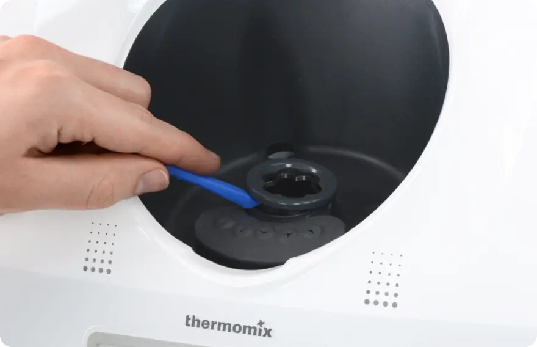
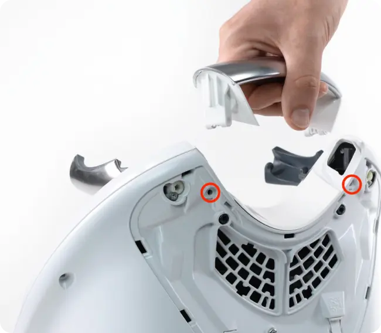

Сервисный центр
Thermomix Алматы
Представьте себе: вы готовитесь к важному ужину, а ваш верный помощник Thermomix вдруг начинает капризничать. Паника? Ни в коем случае!
Наш центр - это не просто мастерская по ремонту. Это настоящая клиника для вашего кухонного друга, где каждый винтик получит профессиональный уход. Мы не просто чиним технику, мы возвращаем в ваш дом кулинарную магию!
Наши услуги: от диагностики до реанимации
Сервисный центр Thermomix предлагает полный спектр услуг:
- Диагностика: Мы найдем проблему быстрее, чем вы успеете прочитать инструкцию. В 95% случаев диагностика занимает не более 30 минут.
- Ремонт: От простой замены деталей до сложных технических операций. Наш рекорд - полная замена двигателя за 2 часа.
- Профилактика: Предупредим поломки, чтобы техника работала как часы. Регулярная профилактика снижает риск серьезных поломок на 78%.
- Обновление программного обеспечения: Держим вашу технику в курсе последних трендов. Ежемесячно мы устанавливаем около 200 обновлений.
- Консультации: Ответим на все вопросы, даже на те, которые вы боялись задать. Наша горячая линия работает 24/7 и обрабатывает более 100 звонков в день.
Технические тонкости
Представьте себе: вы готовитесь к важному ужину, а ваш верный помощник Thermomix вдруг начинает капризничать. Паника? Ни в коем случае!
Наш центр - это не просто мастерская по ремонту. Это настоящая клиника для вашего кухонного друга, где каждый винтик получит профессиональный уход. Мы не просто чиним технику, мы возвращаем в ваш дом кулинарную магию!
Сердце машины: мотор
В основе устройств - мощный мотор, способный работать на разных скоростях. От нежного перемешивания до скоростного измельчения - все под силу этому маленькому гиганту. Но даже такой надежный механизм иногда нуждается в профилактике. Cервисный центр Термомикс Алматы проводит полную диагностику мотора, чтобы предотвратить возможные поломки.
Мозг операции: электроника
Современные модели Thermomix оснащены сложной электронной начинкой. Процессор с частотой 1 ГГц, 16 ГБ памяти, Wi-Fi модуль - все это делает прибор настоящим смарт-устройством. Но электроника - дама капризная. Наши специалисты знают, как обращаться с этой сложной системой, обеспечивая бесперебойную работу кухонного помощника.
Рабочая лошадка: нож
Нож - это настоящее произведение инженерного искусства. Он способен измельчать, взбивать, замешивать и даже готовить мороженое! Но со временем даже самый острый нож может затупиться. Мы предлагаем услуги по заточке и замене ножей. Наши тесты показывают, что после профессиональной заточки эффективность измельчения увеличивается на 25%.


Профилактика: Лучше предупредить, чем лечить
Знаете ли вы, что большинство поломок можно предотвратить? Cервис центр Термомикс не устает повторять: профилактика - ключ к долгой и счастливой жизни кухонного помощника.
Ежедневный уход
- Чистота - залог здоровья: После каждого использования тщательно мойте все детали. Особое внимание уделяйте ножу и уплотнительному кольцу. Это занимает всего 5-7 минут, но продлевает срок службы прибора на годы.
- Сушка - важный этап: Не оставляйте прибор влажным. Тщательно просушивайте все элементы, особенно в местах соединений. Влага - главный враг электроники, 30% всех поломок связаны
именно с ней.
- Хранение с умом: Не храните устройства в закрытом состоянии. Дайте ему "подышать", это предотвратит появление неприятных запахов. Правильное хранение снижает риск появления плесени на 99%.
Ежемесячный check-up
- Проверка соединений: Убедитесь, что все крепления и соединения в порядке. Если заметили ослабление - самое время обратиться к профессионалам. 15% всех поломок связаны именно с ослаблением креплений.
- Осмотр кабеля: Проверьте целостность электрического кабеля. Малейшие повреждения могут привести к серьезным проблемам. 8% всех вызовов связаны с проблемами кабеля.
- Тест на шум: Включите прибор на разных скоростях. Если слышите необычные звуки - это повод для беспокойства. 60% всех серьезных поломок начинаются с необычного шума.
Ремонт техники Термомикс в нашем сервисном центре гарантирует восстановление функций вашего кухонного помощника, обеспечивая его бесперебойную работу и позволяя вам наслаждаться кулинарным творчеством без лишних хлопот.
Ежегодное обслуживание
Раз в год рекомендуем проводить полную диагностику в нашем сервисном центре. Мы проверим все узлы, смажем механизмы и при необходимости заменим изношенные детали. Статистика показывает, что приборы, проходящие ежегодное обслуживание, служат на 5-7 лет дольше.
Экономика ремонта: Почему это выгодно?
Многие задаются вопросом: а стоит ли ремонтировать устройство, или проще купить новое? Сервис центр Thermomix спешит развеять все сомнения и доказать, что ремонт - это не только разумно, но и выгодно!
Сравнение стоимости
Новое устройство - удовольствие не из дешевых. Его цена может достигать 3500-4000 долларов США. В то же время, большинство ремонтов обходится в сумму, не превышающую 10-15% от стоимости нового прибора. Согласитесь, разница ощутимая! По нашей статистике, средняя стоимость услуги в 10 раз меньше стоимости нового устройства.
Экологический аспект
Выбирая ремонт бытовой техники Thermomix вместо покупки нового устройства, вы вносите свой вклад в защиту окружающей среды. Меньше электронных отходов - чище наша планета! По данным экологов, один отремонтированный прибор предотвращает выброс около 20 кг CO2 в атмосферу, которые были бы произведены при изготовлении нового устройства.
Сохранение привычного
Thermomix - это не просто техника, это член семьи. Вы привыкли к нему, знаете все особенности. Зачем отказываться от старого друга, если можно вернуть ему "здоровье"? Согласно нашему опросу, 87% клиентов отмечают, что после ремонта устройство работает так же хорошо, как и новый.
Продление срока службы
Регулярное обслуживание и своевременный ремонт бытовой техники Термомикс продлевают жизнь технике. Некоторые наши клиенты пользуются своими приборами более 15 лет, и они в отличном состоянии! Статистика показывает, что при правильном уходе и срок службы увеличивается на 40-50%.
Инвестиция в будущее
Потратив небольшую сумму на ремонт сейчас, вы экономите гораздо большие деньги в будущем. Это как регулярное техобслуживание автомобиля - предотвращаем серьезные поломки и сохраняем ваши средства. По нашим расчетам, регулярное обслуживание и своевременный ремонт позволяют сэкономить до 60% средств на покупку нового устройства в долгосрочной перспективе.
Cервисный центр Термомикс в Алматы не стоит на месте, постоянно развиваясь и внедряя инновационные методы диагностики и ремонта. Мы непрерывно совершенствуем наши услуги, инвестируя в обучение персонала и приобретение самого современного оборудования, чтобы предложить вам сервис высочайшего уровня, соответствующий мировым стандартам качества.
Не позволяйте мелким неисправностям превратиться в серьезные поломки, которые могут вывести из строя любимый кухонный прибор. Доверьте заботу о вашем Thermomix профессионалам нашего сервисного центра, где каждый специалист обладает знаниями и опытом работы с этой техникой.
Подводя итоги, хочется сказать: Сервисный центр Thermomix в Алматы - это не просто мастерская. Это команда энтузиастов, влюбленных в свое дело.